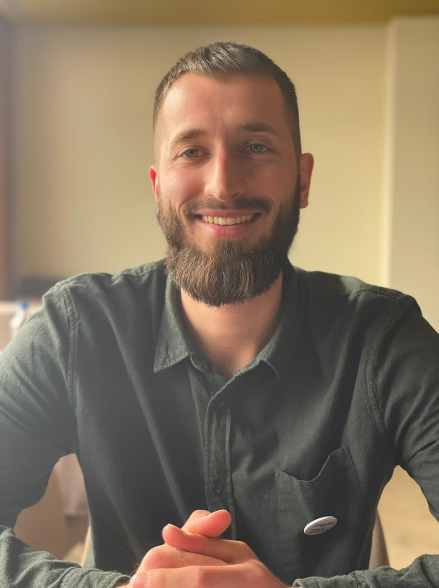

Mirwsevini nw faqen time
PETRIT MATOSHI

Petrit Matoshi gjatw angazhimit me Teach For Kosova, shkurt 2021
Petrit Matoshi u lind nw vitin 1994 nw qytetin e Kamenicws, nw Kosovw. Shkollimin fillor dhe tw meswm e kreu nw vendlindje,
ndwrsa studimet universitare i kreu nw Prishtinw e ato pasuniversitare i vazhdoi nw Prizren. Aktualisht punon nw D.K.R.S. nw Komunwn e Kamenicws . Wshtw i martuar dhe ka dy fwmijw
Kategoritw
Edukimi ^
Edukimi Formal
Institucioni
Vendi
Niveli
Drejtimi
Periudha
ShFMU "Fan S. Noli
Kamenicw
Fillor, i meswm i ulwt (1-9)
/
2000-2009
Gjimnazi "Ismail Qemali
Kamenicw
I meswm i lartw (10-12)
Shkenca Natyrore
2009-2010
Universiteti "Hasan Prishtina", Fakulteti Filozofik
Prishtinw
Bachelor
Etnologji
2012-2015
Universitit "Ukshin Hoti"
Prizren
Master
Trashwgimi Kulturore dhe Menaxhim i Turizmit
2015-2017
Edukimi Jo-Formal
Instituti/Organizata
Vendi
Trajnimi
Periudha
UsAID
Kamenicw
Cumputer Club
2009-2010
Teach For Kosova
Prishtinw
Instituti Veror
Korrik-Gusht, 2020
Pwr Programera
Online BootCamp 5
Qershor 2022, vazhdon
VocUp
Kamenicw
Kursi i Gjuhes Serbe
Janar-Prill 2019
Karriera ^
Arkeolog Pjeswmarrws nw katwr fushata arkeologjike me I.A.K.-nw nw Kalanw e Dardanws, nga viti 2016-2019
Mbwshtetws Profesional pwr Trashwgimi Kulturore D.K.R.S. ,Komuna e Kamenicws , nga viti 2020 e tutjeThemelues i SELMA "SELMA - lulet mw tw mira", wshtw njw biznes i vogwl i themeluar nw vitin 2020. Ofron lule tw gjalla nw vazo tw rralla, pwr ambiente tw brendshme
Kontakti ^
adresa: Rruga "Luan Haradinaj", nr. 29, 62000, Kamenicw, Republika e Kosovws email: petritmatoshi1@gmail.com tel.: +38349489691
social media: facebook / instagram